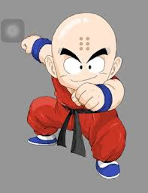
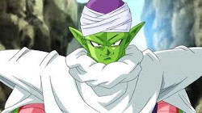

Más conocido simplemente como Vegeta (ベジータKan, BejītaHep Jap) o Vegeeta, es el deuteragonista de Dragon Ball Z, Dragon Ball Z Kai, Dragon Ball GT y Dragon Ball Super. Es el hijo mayor del Rey Vegeta III, así como el príncipe más reciente de la Familia Real Saiyan y uno de los pocos superviviente tras el Genocidio de los Saiyan del Planeta Vegeta del Universo 7, destruido a manos de Freezer. Es el eterno rival de Son Goku, hermano mayor de Tarble, el esposo de Bulma, padre de Trunks y Bra y ancestro de Vegeta Jr.
Cumple un papel antagónico, más adelante decide rebelarse ante el Imperio de Freezer y se vuelve un aliado clave para los Guerreros Z, a tal punto que con el paso del tiempo llegaría a cambiar su manera de ser, optando por permanecer y vivir en la Tierra para luchar junto a ellos contra las inminentes amenazas. Él, junto a Piccolo, es de los antiguos enemigos de Son Goku que ha evolucionando de ser un villano, a antihéroe, y finalmente a un héroe a lo largo del transcurso de la historia llegando a convertirse en el deuteragonista de la serie.
Porta una camiseta spandex azul y una armadura blanca con hombreras amarillentas; botas y guantes blancos y un Rastreador con el lente color rojo fucsia. Al llegar a la Tierra, poseía cola, pero le fue cortada por Yajirobe en su pelea contra Goku. En el Arco de Freezer, utiliza una camiseta spandex azul oscuro, y se deshace del rastreador al obtener el Sentido del Ki, utilizando ahora una versión más sintetizada de su armadura. Únicamente en la Arco de Boo y en la 28° edición del Torneo de Artes Marciales dejó de utilizar su armadura excepto sus guantes y botas.
Retoma el uso de su armadura característica y únicamente en los arcos La Resurrección de 'F' y del Universo 6, usa una variante de su armadura con líneas de diversos patrones, más circulares y el símbolo de Whis en el pecho. Su traje es de color gris oscuro con relieves u ornamentos.
La armadura de combate y los guantes y botas que lleva Vegeta son de un color gris levemente oscuro. En la película, Vegeta utiliza esa armadura en conjunto con ropa de invierno, la cual consiste en un largo abrigo verde claro con líneas blancas, cuero negro y con las siglas "SAB" de color violeta en el área del pecho, este abrigo se extiende hasta la barbilla por la parte superior y hasta las rodillas por la parte inferior.
Vegeta es un Saiyan frío, poco expresivo y lleno de resentimiento por la traición de Freezer hacia su raza. Vegeta desprecia el compañerismo, inclinándose a actuar por méritos propios y rara vez acepta la ayuda en una pelea (siempre y cuando sus propósitos coincidan), esto se demuestra cuando Vegeta ofrece realizar una "alianza" con Goku, Gohan y Krilin para derrotar a las Fuerzas Especiales Ginyu y a Freezer. También como la mayoría de todos los Saiyans, es extremadamente arrogante y orgulloso, al punto de ser prepotente, pues cree fielmente que sus habilidades como un Saiyan de clase alta lo hacen un guerrero genéricamente superior, llegando a optar por matar sin piedad a sus enemigos si le es posible, e inclusive actuar de una manera mezquina y cínica al abandonar o traicionar a sus aliados cuando estos ya no le sean de utilidad.
El "orgullo" de Vegeta ha quedado reflejado indiscutiblemente como su mayor punto fuerte, así como su mayor debilidad, demostrando por un lado su dedicación y persistencia en superarse a sí mismo, pero por otro lado libera lo peor de su personalidad, y varios villanos han sabido aprovechar este rasgo en su beneficio para tomar la ventaja. Un ejemplo trágico de todo esto es en su pelea contra Cell.
A pesar de que Vegeta podría haber destruido fácilmente a este en su actual segunda forma, su arrogancia lo superó, y él intencionalmente permitió que absorbiera a la Androide Número 18, sólo para tener un mejor desafío en Cell, a través de la cual probaría sus nuevos poderes, pero a cambio sufrió una derrota humillante y aplastante a manos del androide perfeccionado. En varias ocasiones, Vegeta llega a subestimar a sus oponentes; en los casos de Cell Perfecto y Pequeño Boo, Vegeta se dejó engañar por sus apariencias, creyendo que sólo se habían "encogido", lo que es algo irónico, dada su propia baja estatura, pero con gran poder.
 |
 |
 |
 |
 |
 |
|